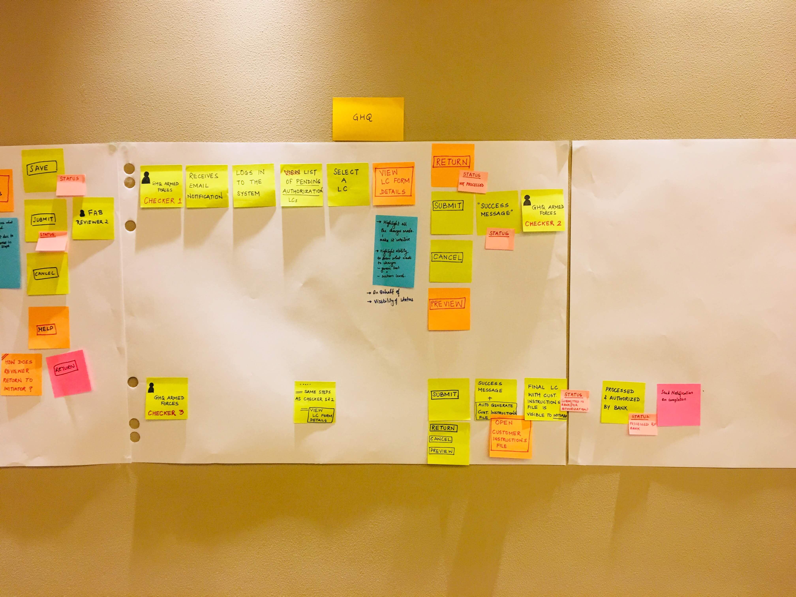
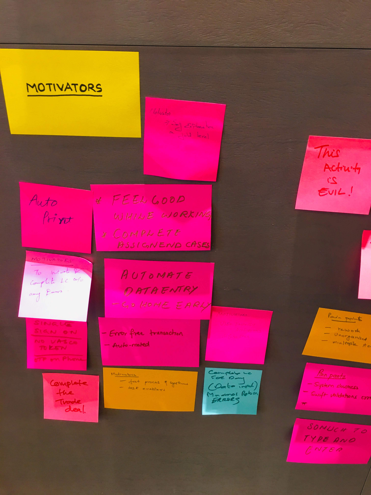
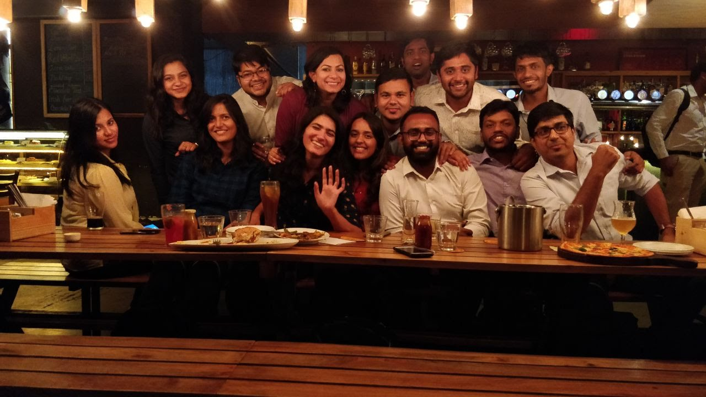
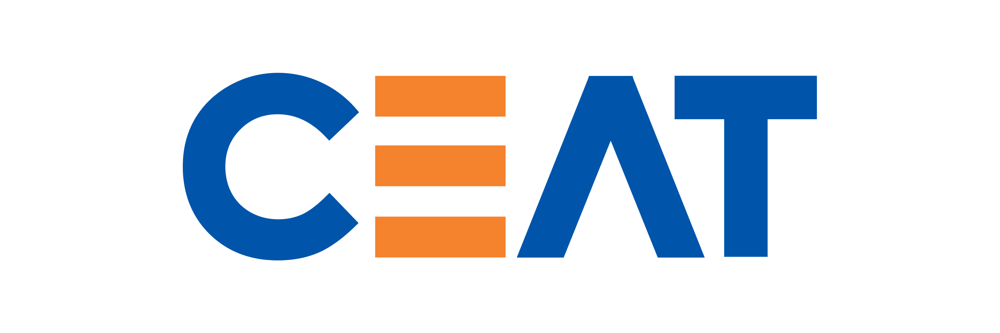

I joined Deloitte Design Studio in Bangalore in 2018 as a UX Consultant in Technology Consulting, then moved to Assistant Manager in mid-2019. Over two years I worked on engagements with Unilever, FAB (First Abu Dhabi Bank), Vodafone, CEAT, and Deloitte Digital itself — moving between supply chain, retail banking, telecom, and CRM as the work changed.
The work was rarely "make a screen prettier." It was usually: sit with stakeholders, figure out what the product should actually do, then design the version that lets the team build something true to that. Consulting time is short, so the UX process has to be honest — research that informs decisions, IA that survives delivery, design that can be argued for in a room full of people with different agendas.
Most artifacts are under client NDA. Linked PDFs below are the sanitized versions; reach out for the full case studies.
Designing for e-commerce across omnichannel customer journeys has taught me to solve for complex systems outside just the digital space.
Four projects across four industries — supply chain, automotive, banking, retail. The thing that links them isn't the screens. It's the same UX move: clients arrive with what feels like a software problem, and most of the time the real problem is how the people around the software work together. Click any project for the longer story.
Unilever's buyers were sitting on a wall of dashboards, but the dashboards weren't laid out around their decisions — they were laid out around the database. Buyers were exporting to Excel and rebuilding the same views every week.
The dashboards weren't broken; they just weren't designed around the buyer's job. They were designed around the data model. That's the difference between an analytics tool that gets used and one that gets exported to Excel.
Spent time with actual buyers before drawing anything. Re-architected the IA around their weekly cadence — what to negotiate, what to expedite, what to defer. Cleaner visual language, fewer screens, the decision surfaced first.
For analytics tools, the IA is the design. Visual polish on a wrong-shape information architecture is wasted work.
Fill in: a moment from time with buyers, or a small layout decision that turned out to matter.
StoryTerritory Leads were using a stock Salesforce build to track tyre demand, dealer orders, and stock-outs across western India. The fields were generic; the work wasn't. Reps were keeping their real worksheet on paper.
Customising a platform like Salesforce isn't a clean-sheet UX exercise — most of the work is finding the few places where a small change has outsized effect, then designing those well within the platform's constraints.
Discovery with Territory Leads and Regional Sales Managers first — what does their day actually look like, where does the platform fail them. Re-modelled the screens around the rep's day: territory snapshot first, supply-vs-demand second, action queues third. Picked the customisation levers that mattered most and let the rest stay default.
Even fixed platforms have UX latitude — but only if you know where to look. The skill is choosing the few changes that earn their cost.
Fill in: a moment from a field visit, or a customisation that turned out to matter more (or less) than expected.Letter of Credit is one of the most stakeholder-heavy flows in trade banking — applicant, beneficiary, issuing bank, advising bank, all working off paper that travels physically between parties. FAB wanted the whole thing digital without losing the audit trail every party needed.
In a multi-party flow, the journey map isn't a research artifact — it's the design tool. Each party's screen is a slice of one shared system, and any decision that doesn't hold for all four parties isn't really a decision yet.
Built one shared journey map across all parties before drawing a single screen. Designed each role's view as a slice of that shared system — same data, different lens. Treated the audit trail as a UI primitive, not a buried log.
In stakeholder-heavy systems, the journey map earns more design decisions than the wireframes do. Spending the extra week on the map saves the extra month on revisions.
Fill in: a workshop moment, or a stakeholder reaction that reshaped a decision.Internal Unilever supply-chain teams were running multiple specialised tools (Buyers, Portfolio, E2E) — each useful, none speaking to the others. Leadership wanted one window on the whole chain.
Three useful tools can still add up to a confusing experience if they don't share a language. The interesting UX problem here wasn't another dashboard — it was the connective tissue.
Established a shared KPI grammar across the three tools first. Designed the E2E view as a navigable layer on top — drill down anywhere and land in the underlying tool, in context. Avoided rebuilding what already worked.
Consistency at the language layer compounds across products. Most "we need a unified dashboard" requests are really "we need to agree on what these words mean."
Fill in: an example of a term that needed alignment, or a decision the unified view made easier.Read more here.


